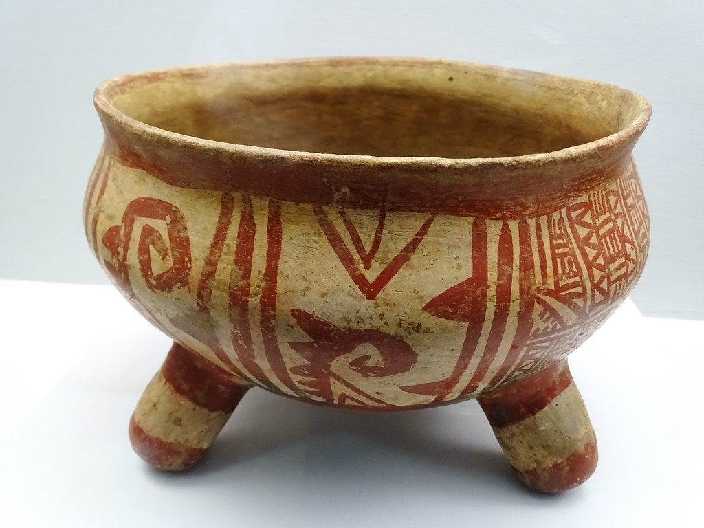

Los guarijío, también conocidos como warihó o warijío, son descendientes de los antiguos pueblos que habitaron la región de la Sierra Madre Occidental en el norte de México desde tiempos prehispánicos. Este grupo indígena tiene sus raíces en la cultura yuto-nahua, que se extiende por varias partes de México y Estados Unidos.
Los guarijío, también conocidos como warihó, son un grupo indígena que habita en el norte de México, en Sonora y Chihuahua. Descendientes de antiguos pueblos prehispánicos, su cultura incluye rituales, música, danza y artesanía. Hablan una lengua de la familia yuto-nahua. Su economía se basa en la agricultura de subsistencia, ganadería y artesanías. Enfrentan desafíos como el desplazamiento, la discriminación y la preservación cultural. Esfuerzos actuales se centran en educación bilingüe, proyectos sostenibles y la documentación de sus tradiciones para asegurar la continuidad de su herencia cultural.
IMAGEN
PRECIO
AUDIO

Precio aproximado: $150 - $600 pesos mexicanos.
Blusas: $300 - $800 pesos; mantas: hasta $2,000 pesos.
Canastas pequeñas: $100 - $300 pesos; grandes y elaboradas: hasta $700 pesos.
La lengua guarijío es hablada por los miembros del grupo indígena guarijío, principalmente en los estados de Sonora y Chihuahua, específicamente en los municipios de Álamos y Chínipas. Aproximadamente 2,000 personas hablan este idioma, aunque muchos guarijío también hablan español, especialmente los jóvenes. Viven en comunidades rurales y montañosas de la Sierra Madre Occidental, lo que ha ayudado a preservar su lengua y cultura.